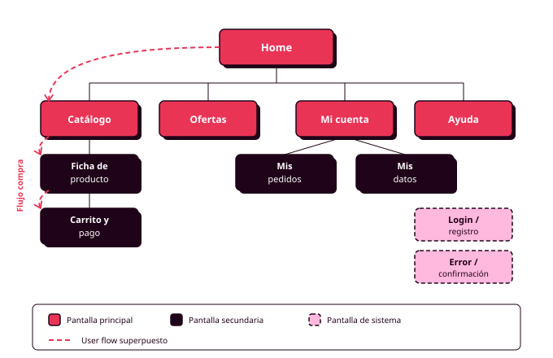

Órbita 1 — Conocer a las personas
4. Arquitectura de la información y sitemap
Piensa en el supermercado de tu barrio. Como lo conoces bien, vas directo a la sección de la leche sin pararte a pensar. Si entras en un supermercado que no conoces, en cambio, das un par de vueltas, preguntas a alguien que trabaja allí y acabas encontrando la leche junto a los yogures, lo que tiene su lógica aunque no sea la que tú esperabas. En los dos supermercados hay los mismos productos, pero están colocados de otra manera y los carteles de los pasillos usan otras palabras.
En una aplicación ocurre exactamente lo mismo, y de eso se ocupa la arquitectura de la información, que consiste en decidir cómo se organiza y cómo se llama el contenido de tu producto: qué pantallas y funciones tiene, cómo se agrupan y qué nombre recibe cada cosa. El sitemap (mapa del sitio) es el esquema que representa esa organización. Tiene forma de árbol, con la pantalla de inicio en la parte superior, un recuadro por cada pantalla y líneas que indican qué pantallas dependen de otras (RA1-c).
Para qué sirve
A quien usa tu aplicación, una buena arquitectura de la información le permite encontrar lo que busca sin perderse, porque cuando la estructura y los nombres son predecibles sabe dónde mirar y qué va a encontrar antes de pulsar. A ti te sirve para decidir dónde va cada parte de tu MVP antes de dibujar ninguna pantalla, que es el momento en el que cambiar las cosas de sitio no cuesta ningún esfuerzo.
Cómo se crea
La arquitectura de la información se construye en tres pasos, y siempre después de tener las personas, el MVP y el user flow. La razón es que la organización correcta depende de cómo piensan tus personas, el MVP indica qué contenido entra en la aplicación y el user flow te da una primera idea de cómo se conecta todo.
1. Inventario. Haz una lista completa de las pantallas, funciones y tipos de contenido que tendrá tu aplicación. Esa lista sale de dos fuentes: los referentes que analizaste al principio de la órbita (qué incluyen las aplicaciones parecidas a la tuya) y las funciones de tu MVP. En la aplicación del polideportivo, por ejemplo, aparecerían el calendario de pistas, el detalle de una reserva, el pago, la lista de tus reservas, las tarifas, las normas de uso y tu perfil. Si algo no aparece en ninguna de las dos fuentes, pregúntate si de verdad hace falta.
2. Agrupación. Para descubrir cómo agruparían ese contenido las personas que van a usar tu aplicación, vas a hacer un card sorting (clasificación de tarjetas). Consiste en dar a varias personas una tarjeta por cada elemento del inventario y pedirles que las agrupen como les parezca más lógico y que pongan un nombre a cada grupo. Lo harás en FigJam, usando notas adhesivas como tarjetas, con cuatro o cinco compañeros que se parezcan a tus personas. Es probable que te lleves alguna sorpresa. Puede que tú hubieras puesto "Tarifas" junto a "Pagar" y que cuatro de cada cinco participantes la coloquen junto a "Normas de uso", porque para ellos el precio es una información que se consulta y pagar es una acción que se realiza. Los grupos que se repiten entre participantes son los que te indican qué estructura debería tener tu aplicación.
3. Mapeo. Por último, convierte esos grupos en el sitemap, con un recuadro por pantalla, la pantalla de inicio como punto de partida y líneas que marquen la jerarquía. En él tendrás que distinguir tres tipos de pantallas: las principales, a las que se llega desde el menú; las secundarias, a las que se llega desde otras pantallas; y las de sistema, como el inicio de sesión, los mensajes de error o las confirmaciones.

Dos decisiones que tendrás que tomar
Estructura ancha o profunda. Una estructura ancha pone muchas opciones en el primer nivel del menú, de modo que todo queda a pocos clics, aunque el menú inicial puede resultar abrumador. Una estructura profunda pone pocas opciones al principio y reparte el resto en más niveles, así que cada pantalla es más sencilla pero hacen falta más pasos para llegar al contenido. En este módulo seguiremos una regla: cualquier función de tu MVP tiene que poder alcanzarse en tres niveles de navegación como máximo (RA6-c).
Cómo se llama cada sección. Usa las mismas palabras que emplearon tus personas en las entrevistas para hablar de sus tareas. Un nombre funciona cuando la persona adivina qué va a encontrar antes de pulsar. "Mis reservas", por ejemplo, se entiende a la primera, mientras que "Gestión de actividad" obliga a entrar para averiguar qué contiene, y mucha gente prefiere no hacerlo. En general, cuanto más convencional sea la navegación, mejor funcionará (RA6-h).
Una buena arquitectura de la información también ahorra recursos. Cada vez que alguien entra en una sección equivocada y tiene que volver atrás, su dispositivo descarga páginas que no necesitaba, de modo que una navegación clara reduce los datos que se transfieren y la energía que se consume. Las Web Sustainability Guidelines lo recogen en dos criterios: que la navegación y la orientación estén bien estructuradas para evitar errores y cargas repetidas (criterio 2.8) y que se usen patrones de diseño conocidos, porque hacen más corto el recorrido de quien usa la aplicación (criterio 2.10).
Antes de darlo por terminado
Revisa el sitemap dos veces. Primero compáralo con tu MVP para asegurarte de que cada función tiene su pantalla y de que no se ha colado nada de lo que decidiste dejar fuera. Después recorre tu user flow sobre el sitemap y comprueba que cada paso encuentra su pantalla, sin huecos y con los mismos nombres en los dos documentos.
Si usas IA para proponer una estructura inicial, ten en cuenta que te dará la organización más habitual para ese tipo de aplicación. Puede ser un punto de partida razonable, pero tendrás que corregirla con los resultados de tu card sorting y con lo que sabes de tus personas. Las diferencias entre esa estructura genérica y tu sitemap final serán la prueba de que detrás hay un proceso de diseño propio (RA1-c).